apt install git -y
git clone https://github.com/babywhale321/bashvm.git
cd bashvm/
bash bashvm-installer.sh
bash bashvm.sh
A storage pool is where your ISO and disk images will reside on.
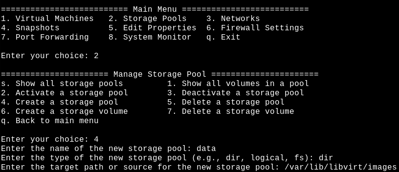
The storage volume is where the actual vm will reside on.
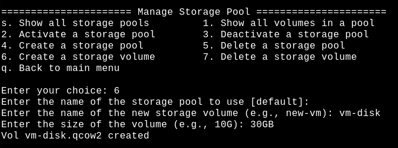
Choosing a macvtap network will be directly attached to the host interface.
Where a NAT network will be a private subnet behind the host interface.
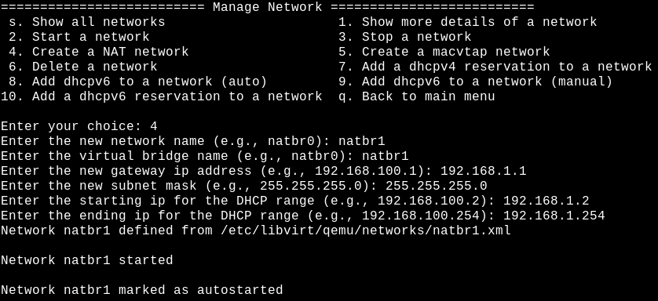
See the example below about creating a new vm.
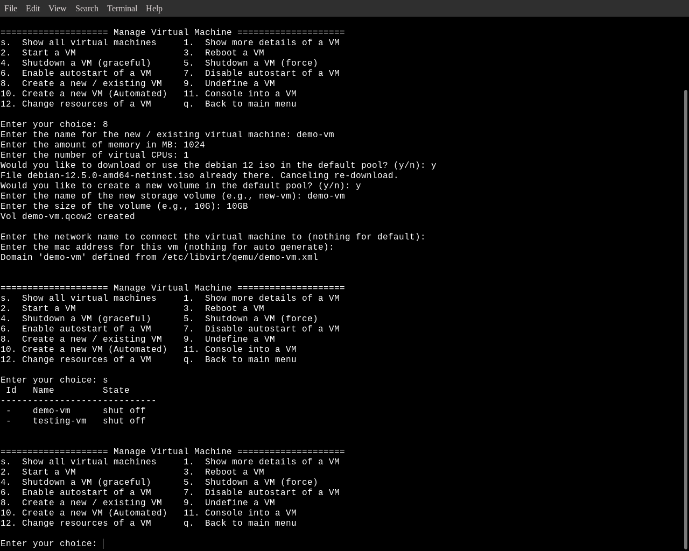
Creating a automated vm will use the default network, and will use the default pool "/var/lib/libvirt/images"
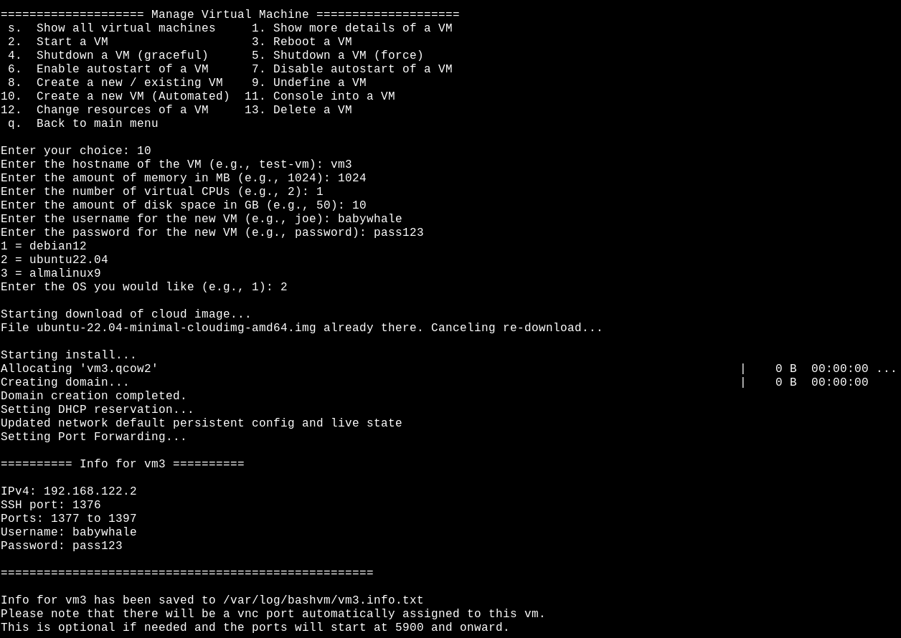
See the example below about creating a new or exsisting vm.
Creating a automated vm will use the default network, and will use the default pool "/var/lib/libvirt/images"
A storage pool is where your ISO and disk images will reside on.
The storage volume is where the actual vm will reside on.
Choosing a macvtap network will be directly attached to the host interface, Where a NAT network will be a private subnet behind the host interface.
An example configuration, For manual setup
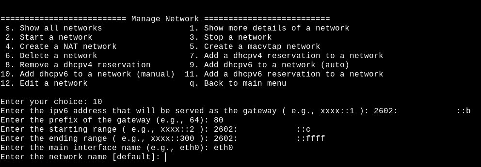
An auto setup will try to make an educated guess about the necessary information
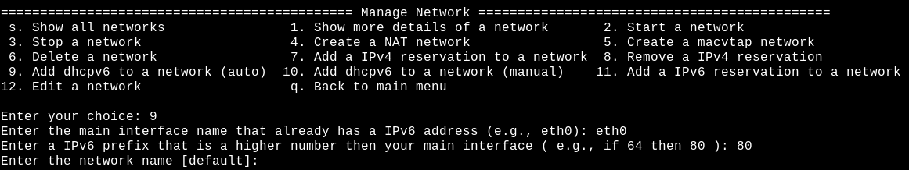
For IPv4 you will need to know the vm name, mac address, network name and the new IPv4 to assign
For IPv6 you will need to know the vm name, network name and the new IPv6 to assign
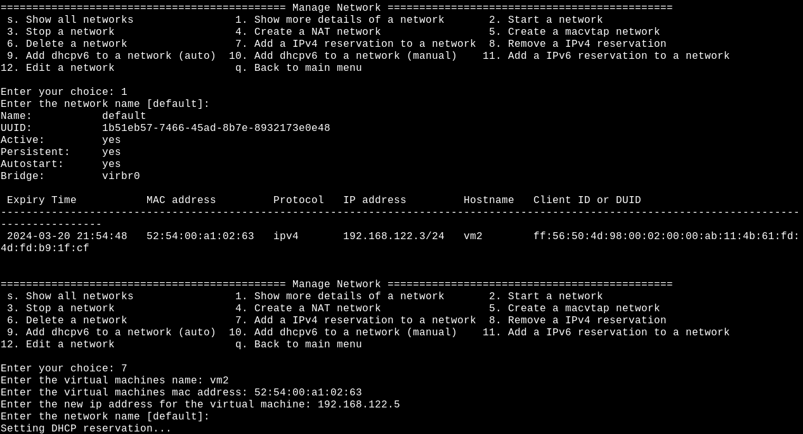
These rules are optional but will forward 1 ssh + 20 ports
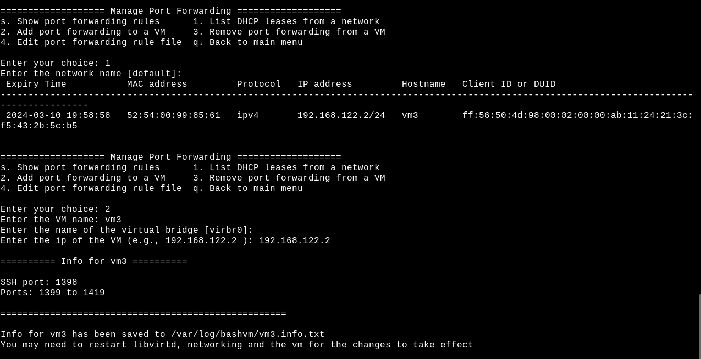
When accessing through VNC there is no user / password
See example below for adding or removing vnc access
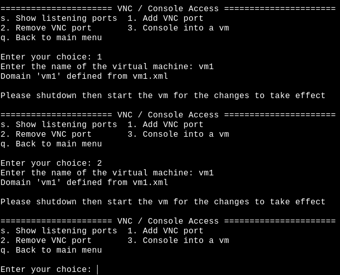
Manually created vm's will not have console access by default
On the vm os you can either use the console service or grub entry as followed
systemctl service
systemctl enable --now serial-getty@ttyS0.service
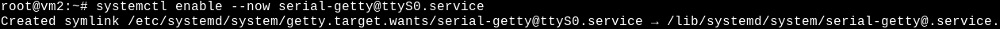
grub entry "/etc/default/grub"
GRUB_CMDLINE_LINUX_DEFAULT="console=tty0 console=ttyS0,115200n8"
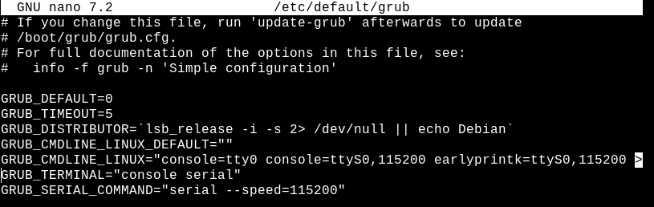